gallery
Table of contents
New Mexico
Carlsbad Caverns National Park
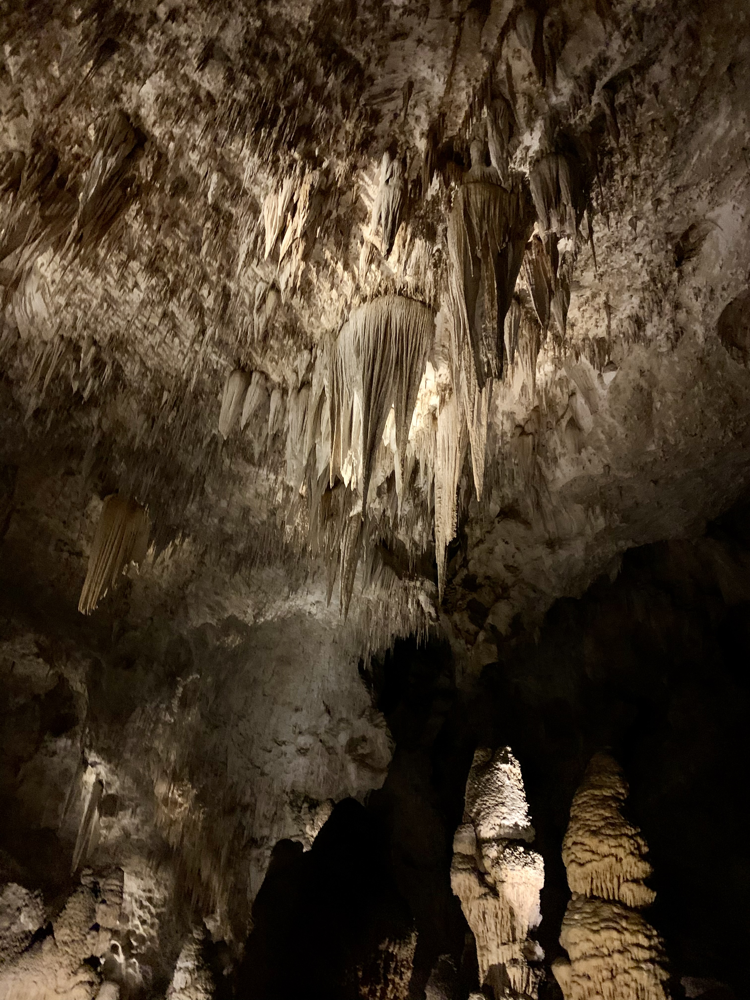
Main room of Carlsbad Caverns. Photo taken by Dylan Schlichting, on December 14, 2020.
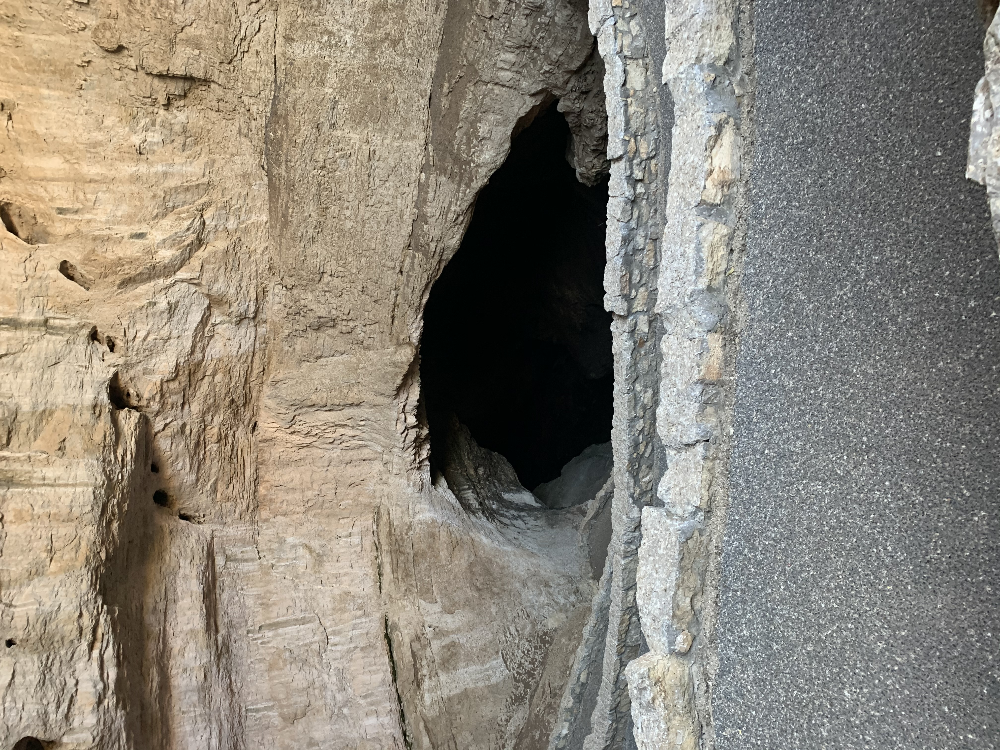
Entrance to the caverns. Photo taken by Dylan Schlichting, on December 14, 2020.
Los Alamos / Santa Fe
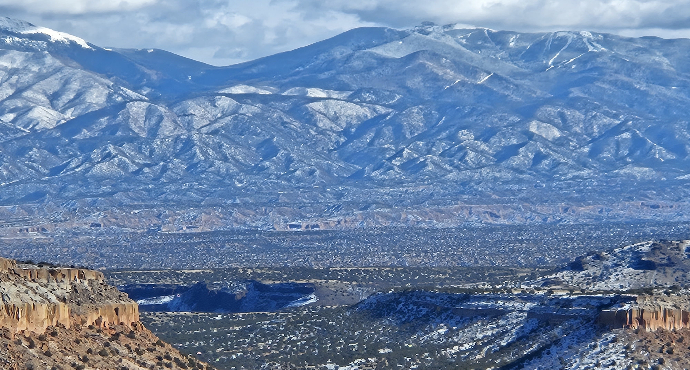
Scenic overlook just outside of Los Alamos. Photo taken by Ronnakrit, Rattanasriampaipong on Dec 03, 2023.

Scenic overlook at Bandolier National Monument. Photo taken by Dylan Schlichting on Dec 03, 2023.
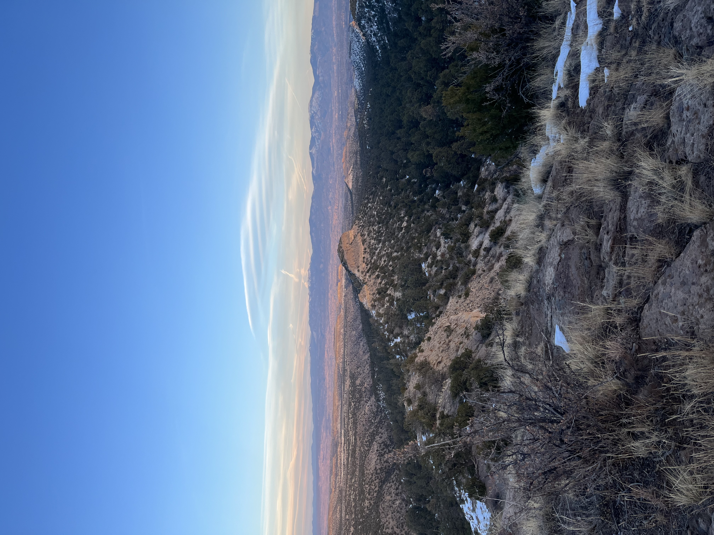
Scenic overlook from Barranca Mesa. Photo taken by Dylan Schlichting on Dec 10, 2023.

Looking at Los Alamos from Guaje Peak. Photo taken by Dylan Schlichting on Dec 24, 2023.

Overlooking the Guaje Mountain trail near the summit. Photo taken by Dylan Schlichting on Dec 24, 2023.
Maine
Baxter State Park

From the summit of Baxter Peak. Photo taken by Dylan Schlichting, on June 15, 2022.

Overlooking Katahdin Stream from Hunt trail. Photo taken by Dylan Schlichting, on June 15, 2022.
Chemo Pond
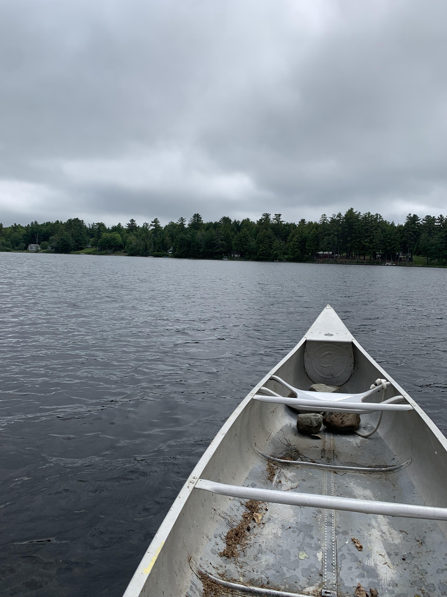
Canoeing on Chemo Pond, Clifton ME. Photo taken by Dylan Schlichting, on June 13, 2022.
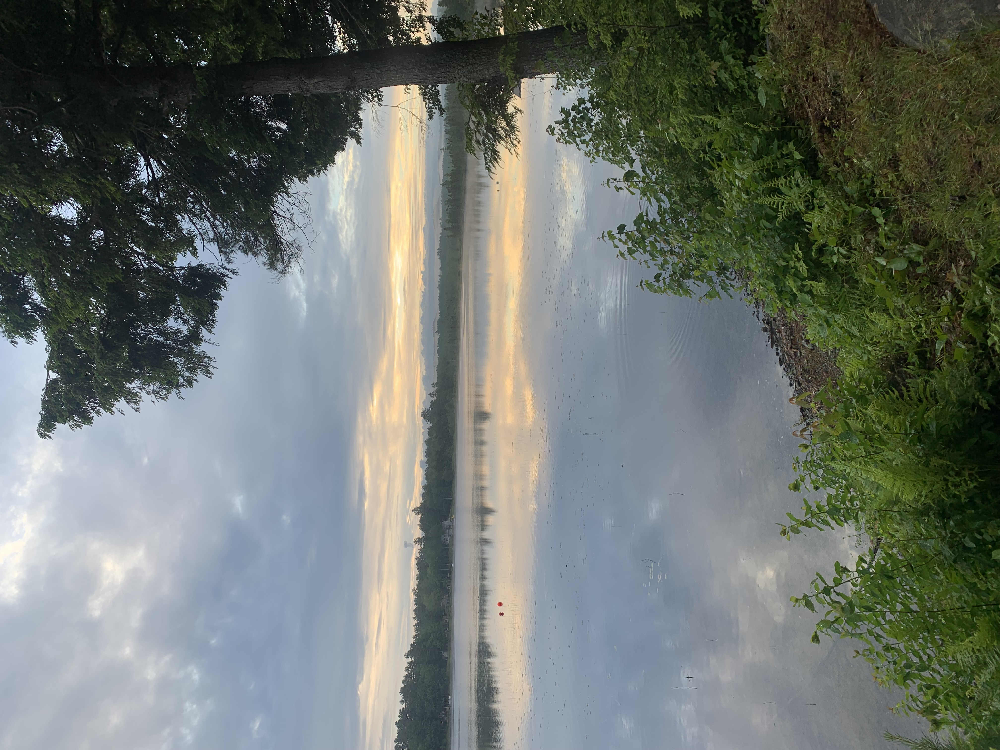
View from the shore of a friend's camp on Chemo Pond. Photo taken by Dylan Schlichting, on June 24, 2022.
Oregon
Bend
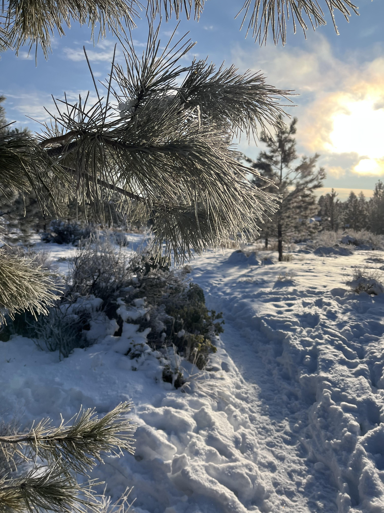
Trail in Alpine Park after fresh snowfall. Photo taken by Dylan Schlichting, on December 13, 2022.
Smith Rock State Park
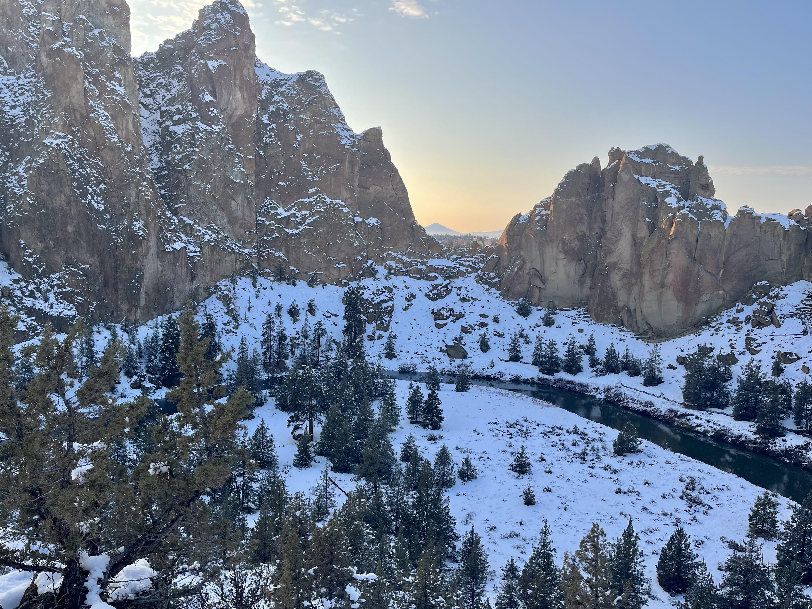
Scenic overlook in Smith Rock State Park. Photo taken by Dylan Schlichting, on December 13, 2022.
Texas
Big Bend National Park

From the summit of lost mine trail. Photo taken by Dylan Schlichting, on March 14, 2022.
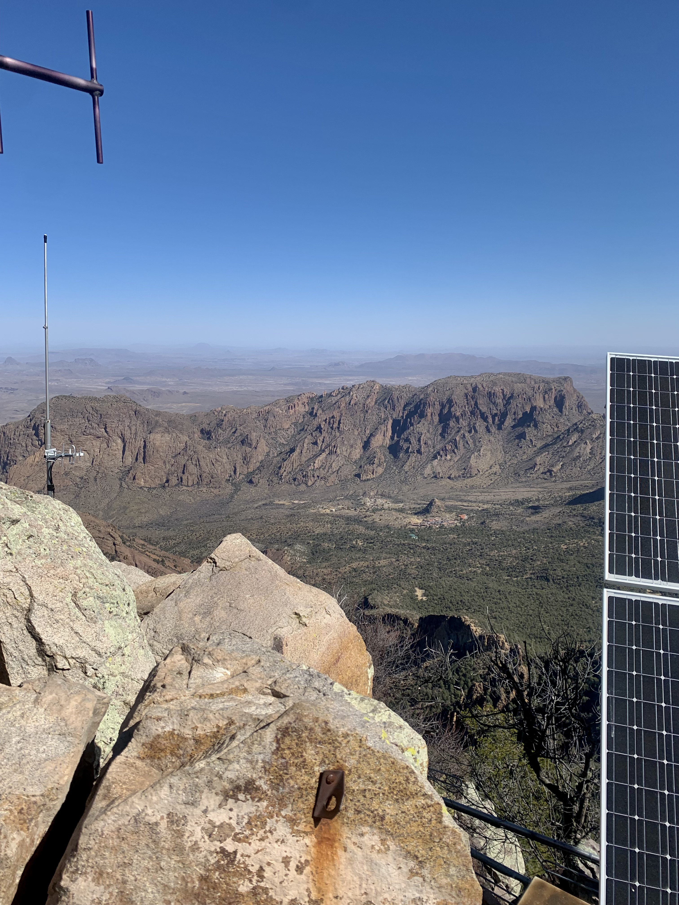
Overlooking the Chisos Mountains from the summit of Emory Peak. Photo taken by Dylan Schlichting, on March 15, 2022.
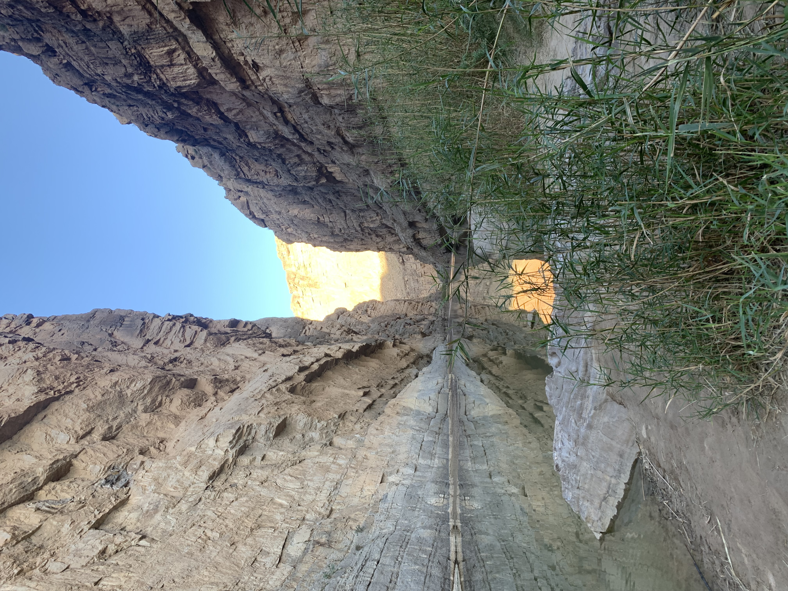
Santa Elena Canyon. Photo taken by Dylan Schlichting, on March 16, 2022.
Guadalupe Mountains National Park

Looking down from Guadalupe Peak campground. Photo taken by Dylan Schlichting, on December 13, 2020.
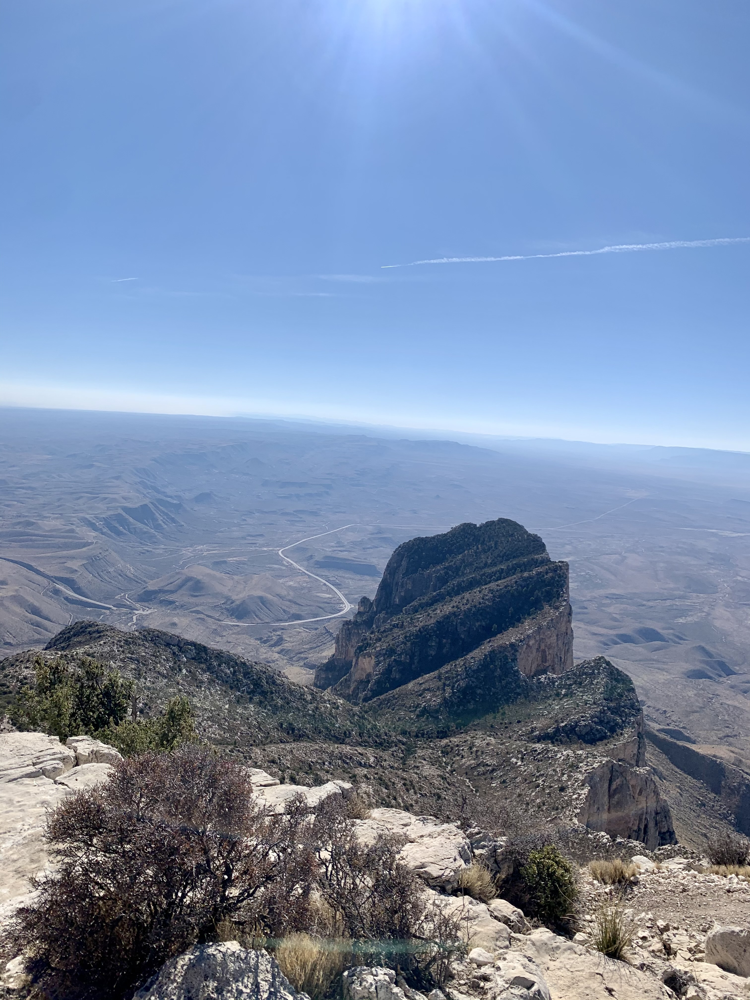
Overlooking El Capitan from the summit of Guadalupe Peak. Photo taken by Dylan Schlichting, on December 13, 2020.